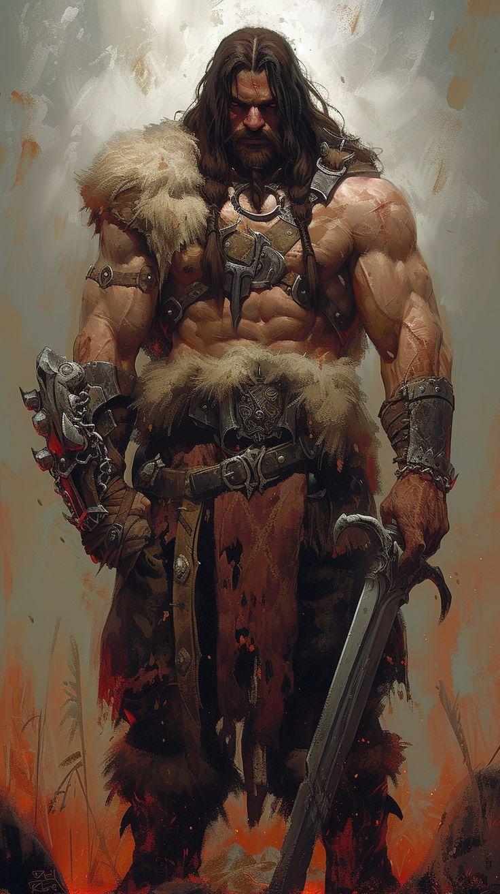
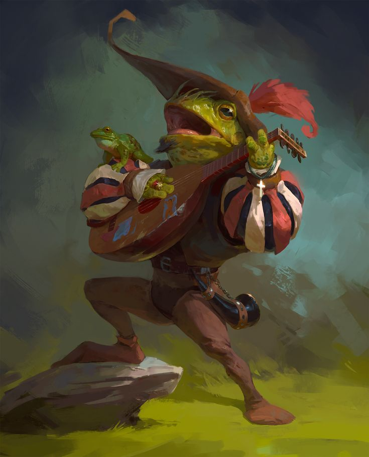
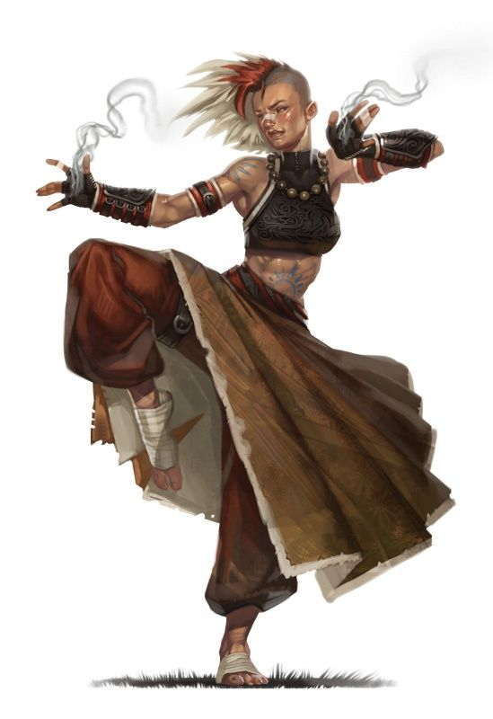

Bárbaro
Alto y salvaje, envuelto en pieles y asiendo su hacha atravesando una tormenta de nieve. Se ríe mientras carga contra el gigante de escarcha que se ha atrevido a cruzarse en su camino. Todos los bárbaros tienen algo en común: la furia. Una ira desenfrenada, insaciable e irreflexiva. No se trata de una simple emoción, pues esta ira es similar a la ferocidad del depredador acorralado, el asalto implecable de la tormenta o la confución del mar. Para los bárbaros la furia emana de la comunión con espíritus animales o dan salida a reservas de ira contenida. Todos sienten su furia como su energía que alimenta no solo su agresividad sino que también sus reflejos, resistencia y proezas de fuerza.
Para un bárbaro la civilización es una muestra de debilidad. Los fuertes abrazan su naturaleza animal. Los bárbaros no se encuentran cómodos rodeados por muros o multitudes. Su hagar son la tierras salvajes y su zona de confort son los combates, donde liberan toda su furia.
Al crear un bárbaro piensa de donde viene y cuál es su lugar en el mundo. Si posees de una tierra lejana seras un extraño en la zona en la que se desarrolle el juego. ¿Que te ha llevado a vivir aventuras? ¿Fuiste atraido a zona más pobladas por riquezas? ¿Te uniste a los soldados de estas naciones para enfrentarte a un enemigo común? Por último recomiendo que te subas tu Fuerza seguido de tu Constitución y elijas el trasfondo "salvaje".
-
Puntos de Golpe
- Dados de Golpe: 1d12 por nivel de bárbaro.
- Puntos de Golpe a nivel 1: 12 + modificador de Constitución.
- Puntos de Golpe a niveles superiores: 1d12 (o 7) + modificador por Constitución por cada nivel por encima del primero.
-
Competencias
- Armadura: armaduras ligeras y medias, escudos.
- Armas: armas sencillas y marciales.
- Herramientas: ninguna.
- Tiradas de salvación: Fuerza, Constitución.
- Habilidades: elige dos entre Atletismo, Intimidación, Naturaleza, Percepción, Supervivencia y Trato con Animales.
-
Equipo
- Haha a dos manos o cualquier arpa cuerpo a cuerpo marcial.
- Dos hachas de mano o cualquier arma sencilla.
- Un paquete de explorador y cuatro jabalinas.
-
Furia
En medio de un combate luchas con una ferocidad primordial. Durante tu turno, puedes usar tu acción adicional para dejarte llevar por la furia. Obtendrás:
- Ventaja en pruebas de Fuerza y tiradas de salvación de Fuerza.
- Al hacer ataques cuerpo a cuerpo con Fuerza ganas un bonificador al daño que aumentara en función del nivel.
- Resistencia al daño contundente, cortante y perforante.
No podrás lanzar ni concentrarte en conjuros. La furia dura 1 minuto, aunque acaba antes si no atacas a nadie (o te ataca) o si acabas inconsciente. También puedes finalizarla tu. Recuperas tus furias tras un descanso largo.
-
Defensa sin Armadura
Si no estas portando armadura tu Clase de Armadura será 10 + tu modificador de Destreza + tu modificador por Constitución. Puedes usar escudo sin renunciar a este beneficio.
-
Ataque Temerario
A partir de nivel 2, puedes abandonar tu defensa para atacar con fiereza. Cuando realices el primer ataque de cada turno puedes decidir atacar temerariamente. Si eliges esto tendrás ventaja en las tiradas de ataque cuerpo a cuerpo que usen Fuerza durante el turno, pero las tiradas de ataque del enemigo también tendran ventaja hasta tu próximo turno.
-
Senda Primordial
A nivel 3 debes escoger una senda que determinara la naturaleza de tu furia. Deberás elegir entre Senda del Berserker y la Senda del Guerrero Totémico. Ambas te otorgarán ciertos rasgos a nivel 3, 6, 10 y 14.
-
Mejora de Característica
A los niveles 4, 8, 12, 16 y 19 podrás aumentar en dos una puntuación de característica o aumentar en 1 dos puntuaciones. No puedes aumentar por encima de 20 estas puntuaciones.
-
Ataque Adicional
A partir de nivel 5 podrás hacer dos ataques en vez de uno por turno.
-
Movimiento Rápido
A partir de nivel, si no llevas armadura pesada, tu velocidad aumenta en 10 pies.
-
Instinto Salvaje
A partir de nivel 7, tus instintos estan tan afilados que tienes ventaja en tiradas de iniciativa. Además puedes actuar con normalidad ante enboscadas y te puedes enfurecer ante estas.
-
Crítico Brutal
A partir de nivel 9, cuando hagas un crítico con un ataque cuerpo a cuerpo podrás tirar uno de los dados de daño del armas una vez más y añadir el resultado al daño. Podrás tirar dos a nivel 13 y tres a nivel 17.
-
Furia Implacable
A nivel 11 tu furia te permite seguir luchando incluso con heridas graves. Si tus puntos de golpe se rreducen a 0 mientras estas enfurecido puedes hacer una tirada de salvación de Constitución CD 10. Si tienes exito pasas a tener 1 punto de golpe. Cada vez que usas este rasgo el CD aumenta en 5 puntos y vuelve a ser 10 tras un descanso.
-
Furia Persistente
A nivel 15 tu furia es tan violenta que solo terminará antes de tiempo si quedas inconsciente o si eliges pararla.
-
Poderío Indómito
A partir de nivel 18, si el resultado de una de tus pruebas de Fuerza es inferior a tu puntuación de Fuerza, puedes usar esa puntuación en lugar del resultado.
-
Campeón Primordial
Al llegar a nivel 20 encarnas el poder de la naturaleza salvaje. Tus puntuaciones de Fuerza y Constitución aumentan en 4. Tu valor máximo para esa puntuaciones pasa a ser 24.
|

Bardo
Un bardo, ya sea un erudito, un escaldo o un bribón, es capaz de tejer magia a través de sus palabras y su música, inspirando a los aliados y desmoralizando a los enemigos, manipulando mentes, creando ilusiones e incluso sanando heridas.
Las palabras y la música no solo son vibraciones del aire sino vocalizaciones con poder en sí mismas. El bardo es un maestro de la canción, el discurso y la magia que ambos albergan. Los bardos afirman que el multiverso nació del habla de los dioses, que sus palabras le dieron forma y que los ecos de esas Palabras de Creación primordiales aún resuenan a través del cosmos. La música intenta atrapar y tomar control de dichos ecos.
Son altamente versatiles, pueden echarse a un lado durante un comabte inspirando a aliados y obstaculizando enemigos o pueden defenderse cuerpo a cuerpo empleando su magia para potenciar sus espadas y armadura.
Un bardo necesita Carisma seguida de Destreza. Es bueno el trasfondo de "animador" y los trucos burla dañina y luces danzantes.
-
Puntos de Golpe
- Dados de Golpe: 1d8 por nivel de bardo.
- Puntos de Golpe a nivel 1: 8 + modificador de Constitución.
- Puntos de Golpe a niveles superiores: 1d8 (o 5) + modificador por Constitución por cada nivel por encima del primero.
-
Competencias
- Armadura: armaduras ligeras.
- Armas: armas sencillas, ballestas de mano, espadas cortas, espadas largas y estoques.
- Herramientas: tres instrumentos musicales de tu elección.
- Tiradas de salvación: Destreza, Carisma.
- Habilidades: escoge tres cualquiera.
-
Equipo
- Un estoque, una espada larga o cualquier arma sencilla.
- Un paquete de diplomático o un paquete de artista.
- Un laud o cualquier otro instrumento musical.
- Armadura de cuero y una daga.
-
Lanzamiento de Conjuros
Te animo a investigar sobre los conjuros ya no solo de bardo sino de todos las clases. Hay una amplia variedad que si pusiera aquí solo cabría eso por lo que en la pesataña de enlaces y videos habrá un enlace a una página de conjuros.
-
Inspiración Bardica
Puedes recurrir a tus palabras para inspirar a los demás. Esto se hace con una acción adicional y eligiendo una criatura que no seas tu y pueda oirte a menos de 60 pies. El objetivo recibe 1d6 de Inspiración.
Antes de que pasen 10 minutos la criatura puede lanzar el dado y añadirlo a una de sus pruebas de característica, tiradas de ataque o tiradas de salvación. Una vez usado el dado este se pierde.
Puedes utilizar este rasgo tantas veces como tu modificador por Carisma y recuperas los usos tras un descanso largo. A nivel 5 pasa a ser 1d8, a nivel 10 pasa a 1d10 y a nivel 15 pasa a 1d12.
-
Aprendiz de Mucho
A partir de nicel 2 puedes añadir tu modificador por competencia a cualquier prueba de característica que no se beneficie ya de este modificador.
-
Canción de Descanso
A partir de nivel 2 puedes recurrir a tus palabras para ayudar a aliados heridos y recuperarlos durante un descanso corto. Si cualquiera de las criaturas escucha la canción gasta Dados de Golpe en recuperar puntos de golpe, cada uno recobrá 1d6 de puntos de golpe adicionales. Aumenta a 1d8 a nivel 9, a 1d10 a nivel 13 y a 1d12 a nivel 17.
-
Mejora de Característica
A los niveles 4, 8, 12, 16 y 19 podrás aumentar en dos una puntuación de característica o aumentar en 1 dos puntuaciones. No puedes aumentar por encima de 20 estas puntuaciones.
-
Colegio Bárdico
A nivel 3 profundizas en las técnicas avanzadas de un colegio bárdico: Colegio del Conocimiento o Colegio del Valor. Ambos dan cieros rasgos a nivel 3, 6 y 14.
-
Pericia
A nivel 3 escoge dos habilidades en las que seas competente y duplica su bonificador para cualquier prueba. A nivel 10 puedes elegir otras dos.
-
Fuente de Inspiración
A partir de nivel 5 recuperas todos los usos de Inspiracioón Bárdica tras un descanso corto o largo.
-
Contaencantamiento
A partir de nivel 6 obtiene la capacidad de usar notas musicales para interrumpir efectos que afecten a la mente. Como acción puedes dar comienzo a una interprestación que durará hasta el final de tu turno. Durante este periodo las criaturas amistosas a menos de 30 pies y tu tendreis ventaja en la tiradas de salvación en contra de ser asustados o hechizados. Para ser beneficiada una criatura debe poder oirte. La interpretación termina al ser incapacitado o al finalizarla voluntariamente.
-
Secretos Mágicos
Al llegar a nivel 10 elige dos conjuros de cualquier clase y los podrás lanzar. Estos conjuros se consideraran como conjuros de bardo y cuentan para el numero de conjuros conocidos que puedes tener. Aprendes otros dos al alcanzar el nivel 14 y el nivel 18.
-
Inspiración Superior
A nivel 20 si cuando tiras iniciativa no te queda Inspiración Bárdica recuperas 1.
|

Monje
Independientemente de la disciplina que practiquen, todos los monjes tienen en común su capacidad para controlar la enegía mágica que fluye a través de sus cuerpo. Ya sea conalizandola a través de una impresionante muestra de habilidad en combate o de un sutil refuerzo de sus capacidaddes defensivas y su velocidad. Los monjes estudian una energia mágica que la mayoría llaman "ki". Esta energía es parte de la magia que habita el mundo, concretamente en los seres vivos. Los monjes hacen este su poder, controlandolo en el interior de sus propios cuerpos para crear efectos mágicos y superar los límites físicos de su organismo. Además, algunos son capaces de perturbar el ki de sus enemigos. A trevés de esta energía, los monjes dotan a sus ataques sin armas de una fuerza y velocidad asombrosas. Según ganan experiencia su entrenamiento marcial y su dominio del ki les permite aumentar su control sobre su propio cuerpos como de los enemigos.
Los monjes necesitan Destreza y Sabiduría y suelen vivir en montes aislados por lo que les viene bien el trasfondo "ermitaño".
-
Puntos de Golpe
- Dados de Golpe: 1d8 por nivel de monje.
- Puntos de Golpe a nivel 1: 8 + modificador de Constitución.
- Puntos de Golpe a niveles superiores: 1d8 (o 5) + modificador por Constitución por cada nivel por encima del primero.
-
Competencias
- Armadura: ninguna.
- Armas: armas sencillas, espadas cortas.
- Herramientas: un tipo de herramienta de artesano o un instrumento musical de tu elección.
- Tiradas de salvación: Destreza, Fuerza.
- Habilidades: escoge dos entre Acrobacias, Atletismo, Historia, Perspicacia, Religión y Sigilo..
-
Equipo
- Una espada corta o cualquier arma sencilla.
- Un paquete de explorador de mazmorras o un paquete de explorador.
- 10 dardos.
-
Defensa sin Armadura
A partir de nivel 1, si no portas armadura o escudo tu Clase de Armadura será 10 + tu modificador de Destreza + tu modificador de Sabiduría.
-
Artes Marciales
A nivel 1 tu práctica de las artes marciales te ha otorgado un dominio de los estilos de combate que emplean ataques sin armas y armas de monje, que son espadas cortas y armas sencillas no pesadas ni a dos manos. Tienes las siguientes ventajas:
- Puedes usar tu Destreza en vez de Fuerza para las tiradas de ataque y daño de ataques sin armas o armas de monje.
- Puedes tirar 1d4 en lugar de daño normal de tus ataques sin armas o tus armas de monje. Este dado cambia según tu nivel de monje.
- Cuando llevas a cabo la acción de Atacar con un ataque sin armas o arma de monje durante un turno puedes usar tu acción adicional para hacer un ataque sin armas.
-
Ki
A partir de nivel 2, tu entrenamiento te permite controlar el "ki". Tu capacidad de emplearla se representa mediante los puntos de ki. Tu nivel de monje determina cuantos tienes. Recuperas los puntos de ki tras un descanso corto o largo o meditando durante 30 minutos.
-
Rafaga de Golpes
Después de llevar a cabo la acción de Atacar durante tu turno puedes gastar 1 punto de ki para hacer dos ataques sin armas como acción adicional.
-
Defensa Paciente
Puedes gastar 1 punto de ki para realizar la acción de Esquivar como acción adicional durante tu turno.
-
Paso del Viento
Puedes gastar 1 punto de ki para llevar a cabo acciones de Destrabase o Correr como acción adicional durante tu turno. Además tu distancia de salto se duplica durante el turno.
-
Mejora de Característica
A los niveles 4, 8, 12, 16 y 19 podrás aumentar en dos una puntuación de característica o aumentar en 1 dos puntuaciones. No puedes aumentar por encima de 20 estas puntuaciones.
-
Movimiento sin Armadura
A partir de nivel 2, si no estás llavando armadura ni escudo, tu velocidad aumenta en 10 pies. Esta bonificación aumenta según alcanzas ciertos niveles de monje. A nivel 9 obtienes la capacidad de moverte por superficies verticales y líquidos sin caerte.
-
Tradición Monástica
A nivel 3 te entregas a una tradición monástica de entre las siguientes: el Camino de la Mano Abierta, el Camino de la Sombra o el Camino de los Cuatro Elementos. Te proporcionaran ciertos rasfos a nivel 3, 6, 11 y 17.
-
Desviar Proyectiles
A partir de nivel 3 puedes usar tu reacción para desviar o atrapar el proyectil de un ataque con arma a distancia que te haya impactado. Si haces esto el daño se reduce en 1d10 + modificador de Destreza + tu nivel de monje. Si disminuyes el daño a 0 atrapas el proyectirl siempre que sea lo bastante pequeño como para que puedas sujetralo con una mano. Si lo atrapas podrás gastar 1 punto de ki para realizar un ataque a distancia con el arma. Haces el ataque como si fueras competente.
-
Caida Lenta
A partir de nivel 4, puedes usar tu reacción cuando caigas para reducir cualquier daño que recibas en cinco veces tu nivel de monje.
-
Ataque Adicional
A partir de nivel 5 cuando lleves a cabo la acción de Atacar durante tu turno, podrás hacer dos ataques.
-
Golpe Aturdidor
A partir de nivel 5, puedes interferir con el flujo de ki del cuerpo de un oponente. Cuando impactes a una criatura con un ataque con arma cuerpo a cuerpo puedes gastar 1 punto de ki para realizar un golpe aturdidor. El objetivo deberás tener éxito en una tirada de salvación de Constitución o quedará aturdido hasta el próximo turno.
-
Golpes Potenciados con Ki
A partir de nivel 6 tus ataques sin armas cuentan como mágicos a efectos de superar resistencias e inmunidades.
-
Evasión
A nivel 7 tu agilidad instintiva te da opción de evitar ciertos efectos de área, como el aliento de un dragon o el conjuro Bola de fuego. Deberás hacer una tirada de salvación de Destreza, no recibiras daño si tienes exito en la tirada y recibiras solo la mitad si la fallas.
-
Quietud Mental
A partir de nivel 7 puedes utilizar tu acción para finalizar un efecto que este causando los estados hechizado o asustado.
-
Pureza de Cuerpo
A nivel 10 tu maestria sobre el ki que fluye a través de ti te hace inmune a la enfermedad y el veneno.
-
Lengua del Sol y la Luna
A partir de nivel 13 aprender a tocar el ki de otras mentes de tal forma que puedes entender todos los idiomas. Cualquier criatura que pueda comprender un idioma entenderás lo que digas.
-
Alma Diamantina
A partir de nivel 14 tu dominio del ki te otorga competencia en todas las tiradas de salvación. Además, cada vez que intentes hacer una tirada de salvacion y falles, podrás gastar 1 punto de ki para repetir la tirada y quedarte con el nuvo resultado.
-
Cuerpo Atemporal
A nivel 15 tu ki es capaz de mantenerte de tal forma que no sufres la fragilidad de la vejez y no puedes envejecer por medios mágicos. Aún asi todavía puedes morir de viejo. Además ya no necesitara ni agua ni comida.
-
Cuerpo Vacío
A partir de nivel 18 puedes usar tu acción y gastar 4 puntos de ki para volverte invisible por 1 minuto. Durante este tiempo tambien tendrás resistencia a todo el saño excepto al de fuerza. Asimismo puedes gastar 8 puntos de ki para lanzar el conjuro proyección astral sin tener que utilizar componente material alguno.
-
Yo Perfecto
A nivel 20 si cuando tiras iniciativa no te quedan puntos de ki, recuperarás 4 de ellos.
|
{kind=link}
{kind=link}
{kind=link}